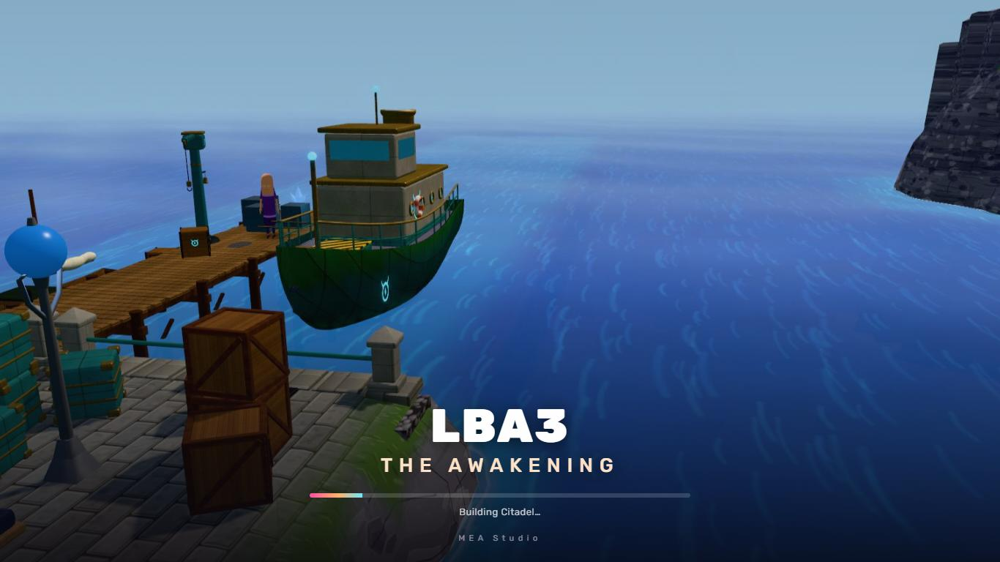
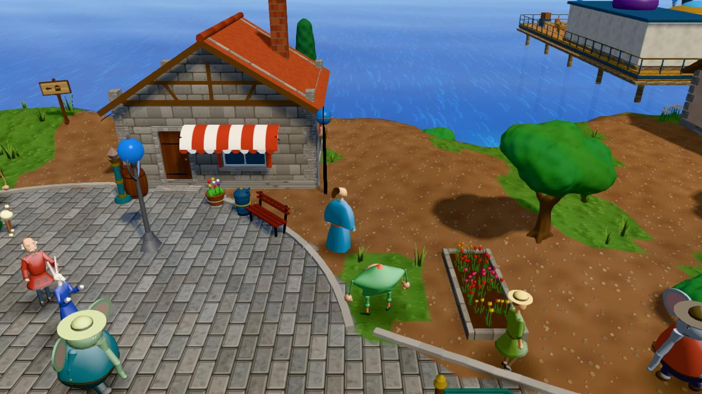

Game 0.43.3 (build 292) (packaged, commit n/a (packaged build)) · battery 97 % · AMD Ryzen 5 3500U with Radeon Vega Mobile Gfx · AMD Radeon(TM) Vega 8 Graphics (driver 31.0.21925.1001) · 2026-10-31T14:34:34.860Z · full · Test Lab 0.1.0


None.
None.
| Test | Result | How | Assertions | Time |
|---|---|---|---|---|
| Cold launch to title | Passed | — | 3/3 | 24 s |
| Title to playable scene | Passed | real input | 4/4 | 28 s |
| Opening cinematic: playback and handover | Failed | real input | 0/0 | 59 s |
| Regions: first and second visit | Passed | test API | 6/6 | 100 s |
| Street traversal (Citadel square) | Passed | real input, test API, injected state | 5/5 | 49 s |
| Quest: take the ball from the cupboard | Failed | real input, test API, injected state | 0/0 | 62 s |
| Door: leave the house by walking through it | Failed | real input, test API, injected state | 2/3 | 32 s |
| Magic ball: throw, flight, return | Passed | real input, test API, injected state | 4/4 | 14 s |
| Sword and weapon switching | Passed | real input, test API, injected state | 3/3 | 4 s |
| Combat in the arena | Passed | real input, test API, injected state | 3/3 | 17 s |
| Pause, resume, focus loss, fullscreen | Failed | real input | 5/6 | 6 s |
| Save, exit, restart and load | Failed | real input, test API, injected state | 5/6 | 25 s |
| Death and respawn | Passed | real input, test API, injected state | 2/2 | 21 s |
| Extended traversal: memory and GPU resources | Passed | real input, test API, injected state | 3/3 | 150 s |
| Repeated visits and resource growth (game.bench.visits) | Failed | test API, injected state, preloaded assets | 0/1 | 152 s |
| Test | Window | Frames |
|---|---|---|
| Cold launch to title | launch | — process start → page loaded 1961 ms · → title 23685 ms |
| Title to playable scene | New Game until playable | 17.6 fps · p50 16.7 · p95 50 · p99 1216.5 · max 1216.5 ms · >33: 6 · >50: 1 (0 behind loading) · GPU p50 10.72 · CPU p50 8.9 Auto Medium · pixel ratio 1 · scale 1 · MSAA 0 · shadows true · lamps 2 · battery true · 3194 ms |
| Regions: first and second visit | zeelich · first visit (built before: unloaded) | 27.2 fps · p50 16.9 · p95 33.5 · p99 66.7 · max 2116.6 ms · >33: 17 · >50: 6 (2 behind loading) · GPU p50 17.98 · CPU p50 16 Auto Medium · pixel ratio 1 · scale 1 · MSAA 0 · shadows true · lamps 2 · battery true |
| Regions: first and second visit | desert · first visit (built before: unloaded) | 35.7 fps · p50 16.7 · p95 33.2 · p99 50 · max 1549.7 ms · >33: 7 · >50: 2 (2 behind loading) · GPU p50 14.09 · CPU p50 7.7 Auto Medium · pixel ratio 1 · scale 1 · MSAA 0 · shadows true · lamps 2 · battery true |
| Regions: first and second visit | hamalayi · first visit (built before: unloaded) | 33.6 fps · p50 16.7 · p95 33.4 · p99 66.7 · max 1633.2 ms · >33: 9 · >50: 3 (3 behind loading) · GPU p50 14.81 · CPU p50 6.3 Auto Medium · pixel ratio 1 · scale 1 · MSAA 0 · shadows true · lamps 2 · battery true |
| Regions: first and second visit | zeelich · second visit (built before: cached) | 44.3 fps · p50 16.8 · p95 33.5 · p99 33.7 · max 166.5 ms · >33: 15 · >50: 1 (1 behind loading) · GPU p50 17.75 · CPU p50 14.4 Auto Medium · pixel ratio 1 · scale 1 · MSAA 0 · shadows true · lamps 2 · battery true |
| Regions: first and second visit | desert · second visit (built before: cached) | 51 fps · p50 16.7 · p95 33.4 · p99 49.9 · max 166.3 ms · >33: 7 · >50: 2 (1 behind loading) · GPU p50 14.3 · CPU p50 9.9 Auto Medium · pixel ratio 1 · scale 1 · MSAA 0 · shadows true · lamps 2 · battery true |
| Regions: first and second visit | hamalayi · second visit (built before: cached) | 53.6 fps · p50 16.7 · p95 33.4 · p99 33.6 · max 34.1 ms · >33: 7 · >50: 0 (0 behind loading) · GPU p50 14.84 · CPU p50 6.9 Auto Medium · pixel ratio 1 · scale 1 · MSAA 0 · shadows true · lamps 2 · battery true |
| Street traversal (Citadel square) | street walk 20 s | 45.2 fps · p50 16.8 · p95 33.4 · p99 33.7 · max 100 ms · >33: 40 · >50: 2 (0 behind loading) · GPU p50 17.37 · CPU p50 13.6 Auto Medium · pixel ratio 1 · scale 1 · MSAA 0 · shadows true · lamps 2 · battery true |
| Door: leave the house by walking through it | walk through the door | 59.7 fps · p50 16.7 · p95 16.9 · p99 17.2 · max 33.4 ms · >33: 0 · >50: 0 (0 behind loading) · GPU p50 11.3 · CPU p50 5.8 Auto Medium · pixel ratio 1 · scale 1 · MSAA 0 · shadows true · lamps 2 · battery true |
| Combat in the arena | arena fight 15 s | 59.2 fps · p50 16.7 · p95 17 · p99 33.3 · max 33.7 ms · >33: 2 · >50: 0 (0 behind loading) · GPU p50 9.82 · CPU p50 6.9 Auto Medium · pixel ratio 1 · scale 1 · MSAA 0 · shadows true · lamps 2 · battery true |
| Extended traversal: memory and GPU resources | street loop 3 min | 46.1 fps · p50 16.8 · p95 33.4 · p99 33.6 · max 100.4 ms · >33: 255 · >50: 3 (0 behind loading) · GPU p50 17.41 · CPU p50 12.9 Auto Medium · pixel ratio 1 · scale 1 · MSAA 0 · shadows true · lamps 2 · battery true |
power battery → battery
Files: results.json (raw frame records), summary.csv, claude-tasks.md, manifest.json, evidence/. "Unavailable" means the machine or the game does not report it.